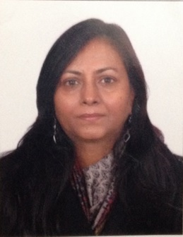

Assistant Professor since 1999
Department of Statistics, Ram Lal Anand College, University of Delhi

Dr Rita Jain
Department of Statistics
Ram Lal Anand College, University of Delhi
Ritajain.stat@rla.du.ac.in
IV-H-016 Ridgewood Estate, DLF Phase 4 Gurgaon, Haryana-122009.
011-24112557 (Office)
9891491018 (Mobile)
Department of Statistics, Delhi University Specialisation: Biostatistics “A Survival Theory approach to the Analysis of some Demographic Models”
1992 - 1996
Department of Statistics, Delhi University
1984 - 1986
Hindu College, Delhi University
1982 - 1984
Hindu College, Delhi University
1979 - 1982
Biostatistics
Inference
Statistical Methods
Applied Statistics
Department of Statistics, Ram Lal Anand College, University of Delhi
Involved in supervision and guidance of students in Delhi University Innovation Projects:
International:
National: